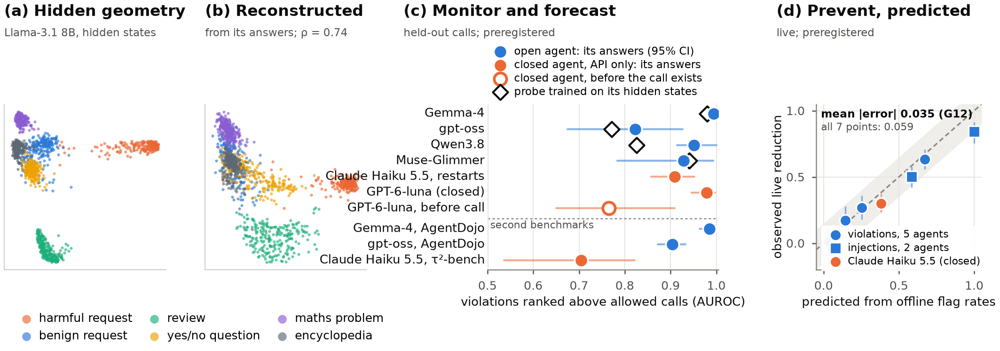

Grey Box
Grey Box: Reading Closed Agents Through Their APIs Alone. A closed model's yes/no answers reveal the geometry of its hidden states, a geometry that models share, with no training. At an agent's proposed call, a fixed read-out of answers to 8 questions about the call monitors it nearly as well as a probe trained on the agent's hidden states, whether the agent or another model answers; the agent's own answer, used as a gate, prevents violations by an amount a law predicts.
Arya Fayyazi · preprint in preparation. The full preregistration record is on the evidence page.


Summary
The hidden coordinates of a closed model cannot be read from its outputs: a rotation of the hidden space changes no output. We ask which geometry of its states its outputs do reveal, and what that means for monitoring closed agents.
- What can be read. Ask yes/no questions in side branches. In the angles 2 arcsin √P(yes), the Fisher–Rao distance between two contexts' answers is exactly Euclidean, and a cross-fit of two sample halves estimates it without bias from sampled text alone.
- What it shows. On eight open models, this geometry tracks the hidden geometry (Spearman 0.41–0.74), far better than the input text (0.22–0.30) or the model's own replies (0.22–0.44). But it is the geometry that models share: on 1,000 fresh contexts, a model's answers match other models' hidden geometries as well as its own, and another open model's hidden state is the better stand-in (G1–G6, all preregistered). Claude Haiku 5.5 reveals the same shared geometry. A model's own final geometry needs full log-probabilities.
- What it is good for. It is a measured reason why an open model can stand in for a closed one. For a policy check on a proposed action, the transcript and the action are Bayes-sufficient. A monitor that reads them through an open model, trained only on open agents, catches most violations of two closed agents (T8b, T11) and blocks them in the loop (T16). Its limit is policy coverage.
How the evidence was produced
- Every confirmatory test was written down and hash-locked before its data was collected or scored; deviations and failures are reported.
- Agents: Gemma-4 and gpt-oss (open), Claude Haiku 5.5 and GPT-6-luna (closed, through their public APIs) on CAPE-Bench; AgentDojo for prompt injection.
- Uncertainty: cluster bootstrap over scenarios (agents) or conversations (chat), 1,000–2,000 resamples.
Figures